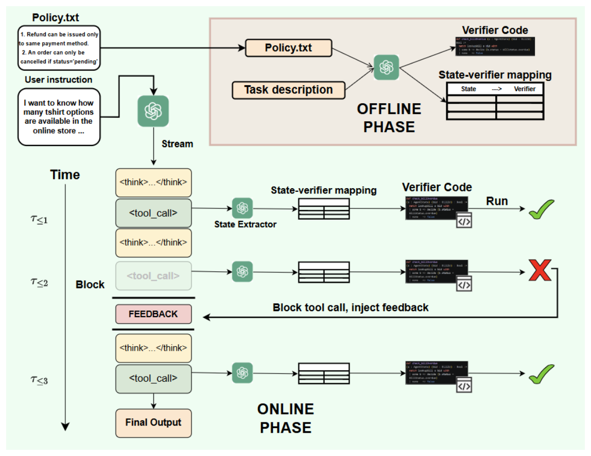
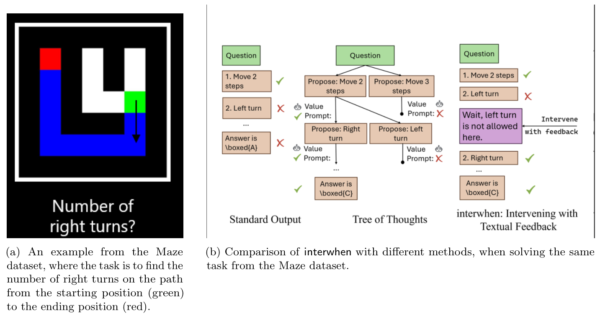
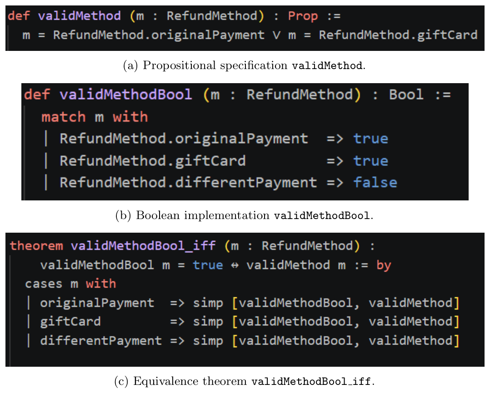

When Should a Reasoning Model Check Its Work?
- Checking only an agent's final answer misses the step where it went wrong: a skipped confirmation, a forbidden tool call, an illegal move.
- Interwhen watches a single reasoning trace, periodically forks the model to pull out checkable state, and runs code verifiers on it in parallel. If a check fails, it rolls back to that point and feeds the violation back to the model.
- Verifiers are synthesised from the natural-language policy, optionally in Lean with a proof that the code matches the spec. On τ²-bench telecom, Qwen3-30B goes from 32% to 87.7% task success at about the same token budget.
Best-of-N sampling and tree search improve reasoning by generating many trajectories and picking the good one, which is expensive. Interwhen keeps one trajectory and steers it: verifiers run alongside generation and step in only when something is actually wrong.
Setting up the problem
A reasoning model produces a trace token by token. We split it into steps at cheap markers: blank lines, reflection tokens such as "But wait", or tool calls. We then ask whether every prefix of the trace respects the task's policy.
| \(\tau = r_0 r_1 \cdots r_m\) | the reasoning trace, split into steps (a thought, a tool call, a reflection) |
| \(\tau_{\le k}\) | the partial trace up to step \(k\) |
| \(\pi_j\) | one rule from the policy \(\Pi = \{\pi_j\}\), e.g. "refunds go to the original payment method" |
| \(s(\cdot)\) | the state extractor: turns a partial trace into a dictionary of variables |
| \(v(\cdot)\) | a programmatic verifier for a rule, run on the extracted state |
In words: a rule looks at a partial trace and answers satisfied, violated, or unknown, because early in a trace there often isn't enough information yet.
In words: no prefix of the trace may ever violate any rule. The goal is strict: either produce a provably compliant trace, or abstain and return no answer.
In words: run the extractor, then the verifier, and you should get the same verdict as the rule itself. When the answer is \(\mathsf{F}\), the verifier also returns a text explanation that is fed back to the model.
Online: extract, verify, intervene
Free-form "thinking" is hard to check directly. The maze move or the order ID is buried in prose. So at each step boundary we fork the model with a separate prompt that asks it to report the state variables a verifier needs. Structured tool calls are parsed directly. The forked call never touches the main context.

Because checks run asynchronously, a trace that never violates anything finishes as fast as it would without monitoring. The one exception is a write tool call, such as cancelling an order, which waits for its check so it can be blocked before it executes.

Offline: where do the verifiers come from?
Outside math and code, ready-made verifiers are rare. Given the policy document, the task description and the tool list, a frontier LLM writes (1) a verifier function per rule and (2) a map from state patterns to verifiers. For example, a rule that "credit for a cancelled order must go back to the original payment source" becomes check_refund_mode(order_id, payment_source, refund_target). It is triggered whenever the trace ends in a cancel_order call.
To trust that generated code, the formal variant writes a Lean specification of the rule, a Boolean implementation, and a proof that the two are equivalent. The verifier is accepted only if the proof checks. A human then needs to confirm only that the specification says what the policy means.

When does steering help? A small Markov model
State extraction is model-based, so it can be wrong. To see when verification still helps, model each step as either compliant or violated. On its own, the model breaks compliance with probability \(\delta\) per step and recovers unaided with probability \(\gamma\). The verifier catches a real violation with probability \(\beta\) and correctly passes a compliant state with probability \(\beta'\); after feedback, \(\phi_{\text{fix}}\) is the chance a violation gets repaired and \(\phi_{\text{safe}}\) the chance a false alarm leaves a compliant trace intact.
In words: a compliant step stays compliant if the verifier correctly lets it pass (\(\beta'\)), or if a false alarm's feedback doesn't break it (\(\phi_{\text{safe}}\)). A violated step recovers if the verifier catches it (\(\beta\)) and the feedback fixes it (\(\phi_{\text{fix}}\)), or if it recovers on its own (\(\gamma\)).
In words: compare the odds of returning to compliance with the odds of leaving it. Verification wins in the long run when it improves that ratio. If the base model can never recover on its own (\(\gamma = 0\)), interwhen is better at every horizon. Theorem 4.4 adds that, if false alarms are harmless and feedback repairs violations at least as often as the model recovers unaided, interwhen is at least as good at every finite horizon.
What happens in the experiments?
| Method | τ²-bench telecom, Qwen3-30B-A3B-Thinking, solo mode (Pass^4, %) |
|---|---|
| Chain-of-thought | 32.17% |
| IW (policy) | 42.11% |
| IW (policy + trace) | 71.10% |
| IW (policy + trace + prompt) | 87.70% |
| Setting | Baseline (CoT) | With interwhen |
|---|---|---|
| τ²-bench telecom · Claude Haiku 4.5 (Pass^4) | 20.2% | 65.8% |
| τ²-bench telecom · GPT-5.4 Mini (Pass^4) | 47.4% | 82.5% |
| AgentSafetyBench (safety score) | 48.75% | 72.31% |
| VitaBench OTA · Claude Haiku 4.5 (reward) | 17.0% | 23.0% |
On non-agentic reasoning benchmarks whose policies encode mathematical or logical constraints, interwhen-based steering reaches near-perfect accuracy for reasoning models. It uses a fraction of the tokens that test-time verification baselines need.
What it does not guarantee. A Lean proof shows that the verifier matches its specification. It cannot show that the specification captures what the policy author meant, or that the forked extractor read the right state from free text. Policies can also be incomplete: on τ²-bench, looking at a handful of traces revealed that "at most 2GB" really meant "exactly 2GB". Vague policies can lead to over-cautious verifiers that block legitimate tool calls.